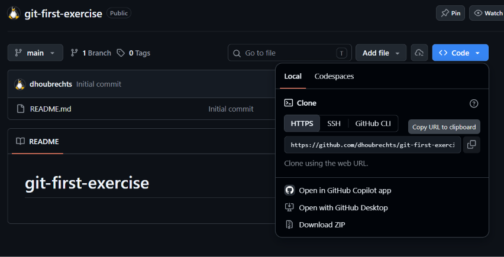
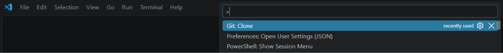
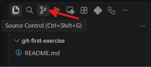
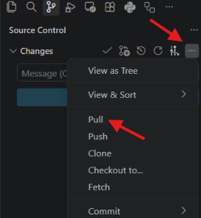
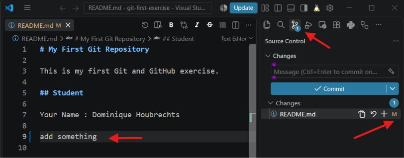
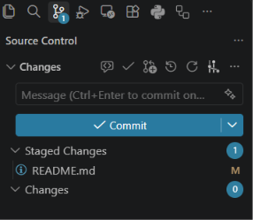
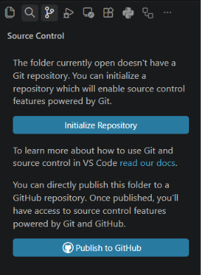
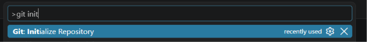
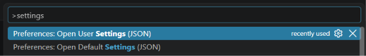

This short guide shows you how to use Git and GitHub with Visual Studio Code.
No previous Git knowledge is required.
References
1. Git vs GitHub
Git
Git is a version control system installed on your computer.
It keeps track of changes you make to your files.
Version 1 → Version 2 → Version 3
Each saved version is called a commit.
GitHub
GitHub is an online platform where Git repositories can be stored and shared.
A repository or repo is a project that is managed by Git.
| Git | GitHub |
|---|---|
| Installed on your computer | Online service |
| Tracks changes | Stores and shares repositories |
Uses git commands |
Provides online Git repositories |
2. What do you need?
You need:
- Visual Studio Code
- Git
- a GitHub account
3. Check if Git is installed
Open Visual Studio Code.
Open a terminal:
Terminal → New Terminal
Enter:
git --version
If Git is installed, you will see something similar to:
git version 2.51.0.windows.1
If you see a Git version, continue to Configure Git.
4. Install Git if it is not installed
If you receive an error such as:
git : The term 'git' is not recognized...
Git is probably not installed.
Option 1 — Install Git using winget
On a recent Windows installation, you can install Git directly from PowerShell:
winget install --id Git.Git -e --source winget
Wait until the installation has completed.
Restart VS Code and check again:
git --version
Option 2 — Install Git manually
Download Git for Windows from:
https://git-scm.com/
Run the installer. The default installation options are normally sufficient.
After installation:
- Close VS Code.
- Start VS Code again.
- Open a terminal.
- Execute:
git --version
5. Configure Git
Git needs to know who creates the commits.
Configure your name:
git config --global user.name "John Doe"
Configure your email:
git config --global user.email "john.doe@example.com"
Preferably use the email address associated with your GitHub account.
Check the configuration:
git config --global --list
You should see:
user.name=John Doe
user.email=john.doe@example.com
You normally only have to configure this once per computer.
6. The basic Git workflow
┌──────────────┐
│ Edit files │
└──────┬───────┘
│ git add
▼
┌──────────────┐
│ Stage changes│
└──────┬───────┘
│ git commit
▼
┌──────────────┐
│ Save version │
└──────┬───────┘
│ git push
▼
┌──────────────┐
│ GitHub │
└──────────────┘
Remember:
EDIT → ADD → COMMIT → PUSH
7. Clone a GitHub repository
On GitHub, click:
Code → HTTPS
Copy the HTTPS URL:
https://github.com/dhoubrechts/git-intro-course.git
Open the VS Code terminal and go to the directory where you want to store your projects:
cd C:\Projects
Clone the repository:
git clone https://github.com/dhoubrechts/git-intro-course.git
Enter the directory:
cd git-intro-course
Open it in VS Code:
code .
8. Check the repository
Execute:
git status
You should see something similar to:
On branch main
Your branch is up to date with 'origin/main'.
nothing to commit, working tree clean
9. Make a change
Modify a file in VS Code and save it.
Then check what changed:
git status
For example:
modified: README.md
10. Stage your changes
Stage the changes:
git add .
Check:
git status
The changes should now appear under:
Changes to be committed:
11. Commit your changes
Create a commit:
git commit -m "Update README"
A commit saves a version of your changes in your local Git repository.
Use clear commit messages:
Update README
Add Python exercise
Fix calculation
Add documentation
Avoid unclear messages:
test
stuff
changes
asdf
12. Push your changes to GitHub
Send your commits to GitHub:
git push
Your files
│
│ git add .
▼
Staging
│
│ git commit
▼
Local Git repository
│
│ git push
▼
GitHub
13. Pull changes from GitHub
Retrieve the latest changes from GitHub:
git pull
git push
Computer ───────────────► GitHub
git pull
Computer ◄─────────────── GitHub
It is a good habit to pull before you start working.
14. Your normal workflow
Start by retrieving the latest version:
git pull
Edit your files.
Check what changed:
git status
Stage:
git add .
Commit:
git commit -m "Describe what you changed"
Push:
git push
Remember:
PULL → EDIT → ADD → COMMIT → PUSH
15. Exercise — Create and use your own repository
In this exercise, you will create your own GitHub repository, clone it to your computer, modify it in VS Code, commit your changes, and push them back to your own repository.
Important: Never push exercises or changes to the lecturer's original repository unless explicitly instructed to do so.
Step 1 — Create your own repository
Go to GitHub and create a new repository.
Name it:
git-first-exercise
Select:
Add a README file
Create the repository.
Step 2 — Clone your repository
On GitHub:
Code → HTTPS
Copy the URL of your repository:
Example:

https://github.com/your-username/git-first-exercise.git
Clone it:
git clone https://github.com/your-username/git-first-exercise.git
Enter the directory:
cd git-first-exercise
Open it:
code .
Step 3 — Check the repository
git status
You should see:
On branch main
Your branch is up to date with 'origin/main'.
nothing to commit, working tree clean
Step 4 — Modify README.md
Change README.md in your VS Code editor to something like:
# My First Git Repository
This is my first Git and GitHub exercise.
## Student
Your Name
Save the file.
Step 5 — Check your changes
git status
You should see:
modified: README.md
Step 6 — Stage your changes
git add .
Step 7 — Commit your changes
git commit -m "Update README"
Step 8 — Push your changes
git push
Step 9 — Verify on GitHub
Open your repository on GitHub.
Check that:
- your modified
README.mdis visible - your commit is visible
- the commit message is
Update README
You have now completed:
CREATE → CLONE → EDIT → ADD → COMMIT → PUSH
Step 10 — Check the status of your repository
git status
You should see:
On branch main
Your branch is up to date with 'origin/main'.
nothing to commit, working tree clean
This means that your local repository is in sync with your GitHub repository.
16. Git Cheat Sheet
| Command | What does it do? |
|---|---|
git --version |
Check if Git is installed |
git clone URL |
Download a repository |
git status |
Check what has changed |
git pull |
Get the latest changes from GitHub |
git add . |
Stage your changes |
git commit -m "message" |
Save your changes in Git |
git push |
Send your commits to GitHub |
The five commands you will use most often:
git pull
git status
git add .
git commit -m "Describe your changes"
git push
17. Using Git with the VS Code Interface
Everything we did using Git commands can also be done using the graphical interface in VS Code.
You are still using Git. VS Code simply executes the Git operations for you.
Source Control
Click the Source Control icon on the left side of VS Code.
You can also use:
Ctrl + Shift + G
The Source Control panel shows the files that have changed.
For example:
Changes
M README.md
M Myscript.ps1
M means that the file was modified.
Clone a repository
Instead of:
git clone URL
You can use VS Code.
Open the Command Palette:
Ctrl + Shift + P
Search for:
Git: Clone

Then:
- Select Git: Clone.
- Paste the GitHub repository URL.
- Choose where you want to save the repository.
- Click Open when VS Code asks if you want to open the cloned repository.
So:
| Terminal | VS Code |
|---|---|
| git clone URL | Git: Clone |
Pull changes
Instead of:
git pull
Open:
Source Control

Click the ... menu and select:
Pull

This retrieves the latest changes from GitHub.
GitHub
│
│ Pull
▼
VS Code
It is a good habit to pull before you start working.
Edit your files
Edit your files normally in VS Code.
After saving a file, Source Control will automatically detect the change.
For example:
Changes
M README.md

You do not have to tell VS Code that the file changed.
Stage your changes
Instead of:
git add README.md
Open Source Control.
Move your mouse over the changed file and click:
+
The file moves from:
Changes
to:
Staged Changes
To stage all changes, click the + next to Changes.

So:
Terminal VS Code
git add file = + next to file
git add . = + next to Changes
Commit your changes
Instead of:
git commit -m "Update README"
type a commit message in the Source Control message box:
Update README
Then click:
Commit
The changes are now committed to your local Git repository.
Push your changes
Instead of:
git push
Open the Source Control ... menu and select:
Push
You may also see:
Sync Changes
Sync Changes can synchronize incoming and outgoing changes. When learning
Git, it is useful to understand Pull and Push separately first.
VS Code
│
│ Push
▼
GitHub
Create a Git repository in VS Code
You can also start Git for an existing local project without using:
git init
Open your project folder in VS Code.
Open:
Source Control
Select:
Initialize Repository

VS Code will initialize Git for the current folder.
This is equivalent to:
git init

Initializing a repository creates a local Git repository. It does not automatically create a repository on GitHub.
VS Code vs Git commands
| Action | Git | VS Code |
|---|---|---|
| Clone | git clone URL |
Git: Clone |
| Check changes | git status |
Source Control |
| Pull | git pull |
... → Pull |
| Stage one file | git add file |
Click + |
| Stage all changes | git add . |
Click + next to Changes |
| Commit | git commit -m "..." |
Enter message → Commit |
| Push | git push |
... → Push |
| Init Git | git init |
Initialize Repository |
18. The VS Code Workflow
Once your repository is configured, you can perform almost the complete workflow without using the terminal.
┌───────────────┐
│ PULL │
│ Source Ctrl │
│ → Pull │
└──────┬────────┘
▼
┌───────────────┐
│ EDIT │
│ edit and save │
└──────┬────────┘
▼
┌───────────────┐
│ STAGE │
│ click + │
└──────┬────────┘
▼
┌───────────────┐
│ COMMIT │
│ message → OK │
└──────┬────────┘
▼
┌───────────────┐
│ PUSH │
│ Source Ctrl │
│ → Push │
└───────────────┘
The command-line workflow:
git pull
↓
EDIT
↓
git add .
↓
git commit -m "message"
↓
git push
is the same as the VS Code workflow:
Pull
↓
EDIT
↓
Stage (+)
↓
Commit
↓
Push
Remember
Whether you use the terminal or the VS Code interface, you are using the same Git workflow:
PULL → EDIT → ADD/STAGE → COMMIT → PUSH
Autofetch in VS Code
Fetch means to check for changes on GitHub without downloading them. While you can fetch manually using the ... → Fetch menu, it is more convenient to have VS Code check for changes automatically. You get a notification when changes are available, and you can then pull them.
For example, if you are working on a project with other people, they may have pushed changes to GitHub while you were working. If you fetch, you will see that there are changes available. You can then pull the changes to your local repository.
You can enable autofetch in VS Code to automatically check for changes on GitHub.
To enable autofetch:
Open the Command Palette:
Ctrl + Shift + PSearch for:
settings
Select:
Open Settings (JSON)Search for the following line in your
settings.jsonfile:{ "git.autofetch": false }Change it to:
{ "git.autofetch": true }Save the file.
Now VS Code will automatically check for changes on GitHub every few minutes.